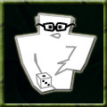

|
 |
Dungeonmaster The leader with the dungeonmaster ability has spent long hours in study and examination of the best ways to construct an underground lair. The knowledge gained can be passed on to the clan builders, who will see their skills improved. The entire lair will be made stronger by a monster with this ability as well as enhancing the battle prowess of its builder minions. Command: N/A This ability is based on: Dungeonmaster may only be purchased by monsters that have leader as their only role. Effects of the Dungeonmaster ability:
|
Battlecry | Boss Monster | Bureaucracy | Dungeonmaster | Grunt Mastery | Hoarding | Inspire | Intimidate | Mentor | Spirituality | Warmonger